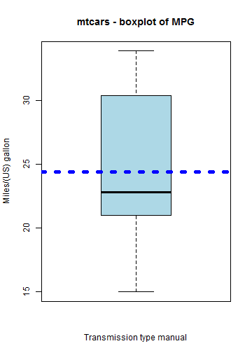

The shinyapp was developed to showcase an interactive application, using mtcars dataset.
The application displays a boxplot of miles per gallon and highlights the mean.
The slider is used to choose the subset of data based on Trasmission type 0 - automatic and 1 - manual.
A choice of radio buttons help choose the color of the line used to highlight the median.
Motor Trends - Miles Per Gallon shiny app
Overview
Links
The shiny app is accessible at https://steve-nathan.shinyapps.io/shinyapp2/
The code for the shiny app is at Github at https://github.com/steve-nathan/shinyapp2
Plot Transmission type automatic
data(mtcars)
mtcars1 <- subset(mtcars, am == 0)
boxplot(mtcars1$mpg, ylab = "Miles/(US) gallon", xlab = "Transmission type automatic",
col = "lightblue", main = "mtcars - boxplot of MPG")

meanmpg = mean(mtcars1$mpg)
Plot Transmission type manual
mtcars1 <- subset(mtcars, am == 1)
boxplot(mtcars1$mpg, ylab = "Miles/(US) gallon", xlab = "Transmission type manual",
col = "lightblue", main = "mtcars - boxplot of MPG")

meanmpg = mean(mtcars1$mpg)
Summary
In the shiny application we used two widgets to demonstrate the interactive capability.
Slider :- sliderInput('type', 'Choose Transmission type:- 0 = automatic, 1 = manual',value = 0, min = 0, max = 1, step = 1),
Radio Button :- radioButtons("color", label = h3("Color"), choices = list("Red" = "red", "Blue" = "blue", "Green" = "green") ,selected = "red")
By combining widgets, Applications can be developed to make it interactive and engaging.